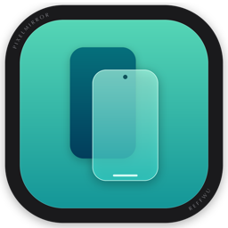
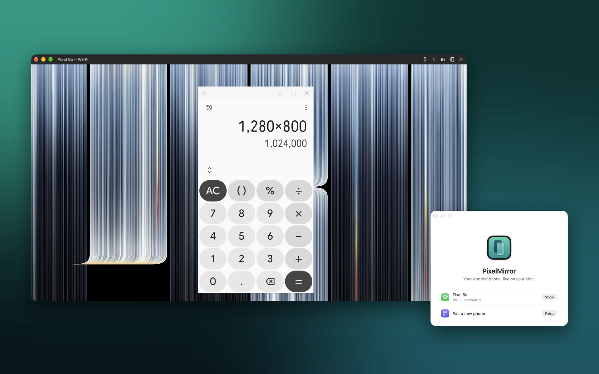

PixelMirror
Your Android phone, live on your Mac.
Tap, type, copy and paste, and hear its sound, all in a window on your Mac. Turn on Wireless debugging once and it finds your phone by itself.
Free · macOS 14 or later · Signed and notarized by Apple

No cable, no Terminal
Pair once with a QR code. After that the phone shows up on its own whenever both are on the same Wi-Fi.
Computer Mode
The phone opens a desktop of its own on your Mac, with apps in windows you can move and resize, a pointer and right-click.
Stays on your network
Nothing to install on the phone and no account. Picture, sound and input go straight between the two.
Requires a Mac with Apple silicon and macOS 14 or later, and an Android 11 or later phone.